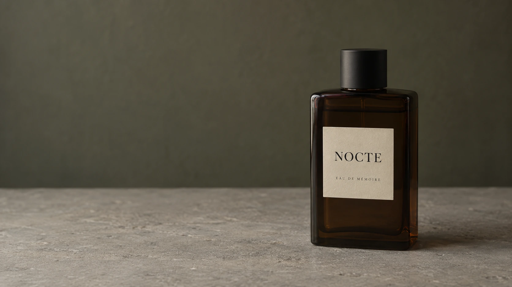

02 / THE BLOOM
Petalby petal.
지나칠 뻔한 꽃잎에
시선이 머뭅니다.
03 / THE TOUCH
Held fora moment.
꽃에 닿는 건 잠깐,
감각은 손끝에 남습니다.

04 / THE ESSENCE
A garden,kept.
손끝에 남은 정원을
한 병의 향으로.
02 / THE BLOOM
지나칠 뻔한 꽃잎에
시선이 머뭅니다.
03 / THE TOUCH
꽃에 닿는 건 잠깐,
감각은 손끝에 남습니다.

04 / THE ESSENCE
손끝에 남은 정원을
한 병의 향으로.